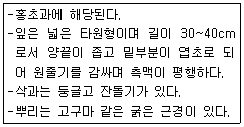
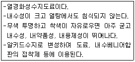
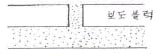

조경기능사 (2012-02-12 기출문제)
1과목: 조경일반
1. 사대부나 양반 계급에 속했던 사람이 자연 속에 묻혀 야인으로서의 생활을 즐기던 별서 정원이 아닌 것은?
- 소쇄원
- 방화수류정
- 다산초당
- 부용동정원
(정답률: 82%)

2. 다음 정원시설 중 우리나라 전통조경시설이 아닌 것은?
- 취병(생울타리)
- 화계
- 벽천
- 석지
(정답률: 85%)
3. 사적인 정원 중심에서 공적인 대중 공원의 성격을 띤 시대는?
- 14세기 후반 에스파니아
- 17세기 전반 프랑스
- 19세기 전반 영국
- 20세기 전반 미국
(정답률: 68%)
4. 조선시대 후원양식에 대한 설명 중 틀린 것은?
- 중엽이후 풍수지리설의 영향을 받아 후원양식이 생겼다.
- 건물 뒤에 자리잡은 언덕배기를 계단 모양으로 다듬어 만들었다.
- 각 계단에는 향나무를 주로 한 나무를 다듬어 장식 하였다.
- 경복궁 교태전 후원인 아미산, 창덕궁 낙선재의 후원 등이 그 예이다.
(정답률: 80%)
5. 영국 정형식 정원의 특징 중 매듭화단이란 무엇인가?
- 낮게 깎은 회양목 등으로 화단을 기하학적 문양으로 구획한 화단
- 수목을 전정하여 정형적 모양으로 만든 미로
- 가늘고 긴 형태로 한쪽 방향에서만 관상할 수 있는 화단
- 카펫을 깔아 놓은 듯 화려하고 복잡한 문양이 펼쳐진 화단
(정답률: 86%)
6. 고대 그리스에서 아고라(agora)는 무엇인가?
- 광장
- 성지
- 유원지
- 농경지
(정답률: 95%)
7. 고려시대 궁궐정원을 맡아보던 관서는?
- 원야
- 장원서
- 상림원
- 내원서
(정답률: 89%)
8. 조경 양식을 형태적으로 분류했을 때 성격이 다른 것은?
- 평면기하학식
- 중정식
- 회유임천식
- 노단식
(정답률: 79%)
9. 조감도는 소점이 몇 개 인가?
- 1개
- 2개
- 3개
- 4개
(정답률: 74%)
10. 19세기 유럽에서 정형식 정원의 의장을 탈피하고 자연 그대로의 경관을 표현하고자 한 조경 수법은?
- 노단식
- 자연풍경식
- 실용주의식
- 회교식
(정답률: 94%)
11. 다음 중 가장 가볍게 느껴지는 색은?
- 파랑
- 노랑
- 초록
- 연두
(정답률: 84%)
12. 다음 중 도시공원 및 녹지 등에 관한 법률 시행규칙에서 공원 규모가 가장 작은 것은?
- 묘지공원
- 체육공원
- 광역권근린공원
- 어린이공원
(정답률: 89%)
13. 주차장법 시행규칙상 주차장의 주차단위구획 기준은? (단, 평행주차형식 외의 장애인전용 방식이다)
- 2.0m 이상 × 4.5m 이상
- 3.0m 이상 × 5.0m 이상
- 2.3m 이상 × 4.5m 이상
- 3.3m 이상 × 5.0m 이상
(정답률: 82%)
14. 옴스테드와 캘버트 보가 제시한 그린스워드안의 내용이 아닌 것은?
- 평면적 동선체계
- 차음과 차폐를 위한 주변식재
- 넓고 쾌적한 마차 드라이브 코스
- 동적놀이를 위한 운동장
(정답률: 57%)
15. 보행에 지장을 주어 보행 속도를 억제하고자 하는 포장 재료는?
- 아스팔트
- 콘크리트
- 블록
- 조약돌
(정답률: 89%)
2과목: 조경재료
16. 다음 중 가로수를 심는 목적이라고 볼 수 없는 것은?
- 녹음을 제공한다.
- 도시환경을 개선한다.
- 방음과 방화의 효과가 있다.
- 시선을 유도한다.
(정답률: 67%)
17. 근대 독일 구성식 조경에서 발달한 조경시설물의 하나로 실용과 미관을 겸비한 시설은?
- 연못
- 벽천
- 분수
- 캐스케이드
(정답률: 61%)
18. 다음 중 거푸집에 미치는 콘크리트의 측압 설명으로 틀린 것은?
- 경화속도가 빠를수록 측압이 크다.
- 시공연도가 좋을수록 측압은 크다.
- 붓기속도가 빠를수록 측압이 크다.
- 수평부재가 수직부재보다 측압이 작다.
(정답률: 61%)
19. 다음 중 비옥지를 가장 좋아하는 수종은?
- 소나무
- 아까시나무
- 사방오리나무
- 주목
(정답률: 60%)
20. 용광로에서 선철을 제조할 때 나온 광석 찌꺼기를 석고와 함께 시멘트에 섞은 것으로서 수화열이 낮고, 내구성이 높으며, 화학적 저항성이 큰 한편, 투수가 적은 특징을 갖는 것은?
- 실리카시멘트
- 고로시멘트
- 알루미나시멘트
- 조강 포틀랜드시멘트
(정답률: 82%)
21. 다음 수목 중 봄철에 꽃을 가장 빨리 보려면 어떤 수종을 식재해야 하는가?
- 말발도리
- 자귀나무
- 매실나무
- 금목서
(정답률: 84%)
22. 다음 중 상록용으로 사용할 수 없는 식물은?
- 마삭줄
- 불로화
- 골고사리
- 남천
(정답률: 52%)
23. 다음 [보기]가 설명하는 식물명은?

- 히아신스
- 튤립
- 수선화
- 칸나
(정답률: 69%)
24. 다음 골재의 입도(粒度)에 대한 설명 중 옳지 않은 것은?
- 입도시험을 위한 골재는 4분법(四分法)이나 시료분취기에 의하여 필요한 량을 채취한다.
- 입도란 크고 작은 골재알(粒)이 혼합되어 있는 정도를 말하며 체가름 시험에 의하여 구할 수 있다.
- 입도가 좋은 골재를 사용한 콘크리트는 공극이 커지기 때문에 강도가 저하한다.
- 입도곡선이란 골재의 체가름 시험결과를 곡선으로 표시한 것이며 입도곡선이 표준입도곡선 내에 들어가야 한다.
(정답률: 83%)
25. 조경 시설물 중 유리섬유강화플라스틱(FRP)으로 만들기 가장 부적합한 것은?
- 인공암
- 화분대
- 수목 보호판
- 수족관의 수조
(정답률: 70%)
26. 수준측량과 관련이 없는 것은?
- 레벨
- 표척
- 앨리데이드
- 야장
(정답률: 53%)
27. 다음 수종들 중 단풍이 붉은색이 아닌 것은?
- 신나무
- 복자기
- 화살나무
- 고로쇠나무
(정답률: 81%)
28. 다음 수목 중 일반적으로 생장속도가 가장 느린 것은?
- 네군도단풍
- 층층나무
- 개나리
- 비자나무
(정답률: 69%)
29. 단위용적중량이 1.65 t/m3이고 굵은 골재 비중이 2.65일 때 이 골재의 실적률(A)과 공극률(B)은 각각 얼마인가?
- A : 62.3%, B : 37.7%
- A : 69.7%, B : 30.3%
- A : 66.7%, B : 33.3%
- A : 71.4%, B : 28.6%
(정답률: 62%)
30. 스프레이 건(spray gun)을 쓰는 것이 가장 적합한 도료는?
- 수성페인트
- 유성페인트
- 래커
- 에나멜
(정답률: 85%)
31. 다음 중 수목을 기하학적인 모양으로 수관을 다듬어 만든 수형을 가리키는 용어는?
- 정형수
- 형상수
- 경관수
- 녹음수
(정답률: 87%)
32. 목재 방부제에 요구되는 성질로 부적합한 것은?
- 목재에 침투가 잘 되고 방부성이 큰 것
- 목재에 접촉되는 금속이나 인체에 피해가 없을 것
- 목재의 인화성, 흡수성에 증가가 없을 것
- 목재의 강도가 커지고 중량이 증가될 것
(정답률: 81%)
33. 다음 [보기]가 설명하고 있는 것은?

- 석탄산수지 도료
- 프탈산수지 도료
- 염화비닐수지 도료
- 멜라민수지 도료
(정답률: 66%)
34. 유리의 주성분이 아닌 것은?
- 규산
- 소다
- 석회
- 수산화칼슘
(정답률: 58%)
35. 블리딩 현상에 따라 콘크리트 표면에 떠올라 표면의 물이 증발함에 따라 콘크리트 표면에 남는 가볍고 미세한 물질로서 시공시 작업이음을 형성하는 것에 대한 용어로서 맞는 것은?
- Workability
- consistency
- Laitance
- Plasticity
(정답률: 52%)
3과목: 조경 시공 및 관리
36. 거실이나 응접실 또는 식당 앞에 건물과 잇대어서 만드는 시설물은?
- 정자
- 테라스
- 모래터
- 트렐리스
(정답률: 91%)
37. 다음 보도블록 포장공사의 단면 그림 중 블록 아랫부분은 무엇으로 채우는 것이 좋은가?

- 자갈
- 모래
- 잡석
- 콘크리트
(정답률: 89%)
38. 조경설계 과정에서 가장 먼저 이루어져야 하는 것은?
- 구상개념도 작성
- 실시설계도 작성
- 평면도 작성
- 내역서 작성
(정답률: 85%)
39. 원로의 디딤돌 놓기에 관한 설명으로 틀린 것은?
- 디딤돌은 주로 화강암을 넓적하고 둥글게 기계로 깎아 다듬어 놓은 돌만을 이용한다.
- 디딤돌은 보행을 위하여 공원이나 저원에서 잔디밭, 자갈 위에 설치하는 것이다.
- 징검돌은 상·하면이 평평하고 지름 또한 한 면의 길이가 30 ~ 60cm, 높이가 30cm 이상인 크기의 강석을 주로 사용한다.
- 디딤돌의 배치간격 및 형식 등은 설계도면에 따르되 윗면은 수평으로 놓고 지면과의 높이는 5cm 내외로 한다.
(정답률: 79%)
40. 다음 중 전정을 할 때 큰 줄기나 가지자르기를 삼가야 하는 수종은?
- 벚나무
- 수양버들
- 오동나무
- 현사시나무
(정답률: 81%)
41. 오늘날 세계 3대 수목병에 속하지 않는 것은?
- 잣나무 털녹병
- 느름나무 시들음병
- 밤나무 줄기마름병
- 소나무류 리지나뿌리썩음병
(정답률: 73%)
42. 자연석(조경석) 쌓기의 설명으로 옳지 않은 것은?
- 크고 작은 자연석을 이용하여 잘 배치하고, 견고하게 쌓는다.
- 사용되는 돌의 선택은 인공적으로 다듬은 것으로 가급적 벌어짐이 없이 연결될 수 있도록 배치한다.
- 자연석으로 서로 어울리게 배치하고 자연석 틈 사이에 관목류를 이용하여 채운다.
- 맨 밑에는 큰 돌을 기초석을 배치하고, 보기 좋은 면이 앞면으로 오게 한다.
(정답률: 86%)
43. 벽돌쌓기 시공에 대한 주의사항으로 틀린 것은?
- 굳기 시작한 모르타르는 사용하지 않는다.
- 붉은 벽돌은 쌓기 전에 충분한 물 축임을 실시한다.
- 1일 쌓기 높이는 1.2m를 표준으로 하고, 최대 1.5m이하로 한다.
- 벽돌벽은 가급적 담장의 중앙부분을 높게 하고 끝부분을 낮게 한다.
(정답률: 86%)
44. 다음 중 농약의 혼용사용 시 장점이 아닌 것은?
- 약해 증가
- 독성 경감
- 약효 상승
- 약효지속기간 연장
(정답률: 59%)
45. 실내조경 식물의 선정 기준이 아닌 것은?
- 낮은 광도에 견디는 식물
- 온도 변화에 예민한 식물
- 가스에 잘 견디는 식물
- 내건성과 내습성이 강한 식물
(정답률: 79%)
46. 나무를 옮겨 심었을 때 잘려 진 뿌리로부터 새 뿌리가 오게 하여 활착이 잘되게 하는데 가장 중요한 것은?
- 호르몬과 온도
- C/N율과 토양의 온도
- 온도와 지주목의 종류
- 입으로부터의 증산과 뿌리의 흡수
(정답률: 66%)
47. 퍼걸라(pergola) 설치 장소로 적합하지 않은 것은?
- 건물에 붙여 만들어진 테라스 위
- 주택 정원의 가운데
- 통경선의 끝 부분
- 주택 정원의 구석진 곳
(정답률: 73%)
48. 경사가 있는 보도교의 경우 종단 기울기가 얼마를 넘지 않도록 하며, 미끄럼을 방지하기 위해 바닥을 거칠게 표면처리 하여야 하는가?(오류 신고가 접수된 문제입니다. 반드시 정답과 해설을 확인하시기 바랍니다.)
- 3˚
- 5˚
- 8˚
- 15˚
(정답률: 57%)
49. 벽돌쌓기에서 사용되는 모르타르의 배합비 중 가장 부적합한 것은?
- 1 : 1
- 1 : 2
- 1 : 3
- 1 : 4
(정답률: 71%)
50. 조경수 전정의 방법이 옳지 않은 것은?
- 전체적인 수형의 구성을 미리 정한다.
- 충분한 햇빛을 받을 수 있도록 가지를 배치한다.
- 병해충 피해를 받은 가지는 제거한다.
- 아래에서 위로 올라 가면서 전정한다.
(정답률: 91%)
51. 직영공사의 특징 설명으로 옳지 않은 것은?
- 공사내용이 단순하고 시공 과정이 용이 할 때
- 풍부하고 저렴한 노동력, 재료의 보유 또는 구입편의가 있을 때
- 시급한 준공을 필요로 할 때
- 일반도급으로 단가를 정하기 곤란한 특수한 공사가 필요할 때
(정답률: 50%)
52. 솔수염하늘소의 성충이 최대로 출연하는 최성기로 가장 적합한 것은?
- 3~4월
- 4~5월
- 6~7월
- 9~10월
(정답률: 64%)
53. 다음 중 일반적인 토양의 상태에 따른 뿌리 발달의 특징 설명으로 옳지 않은 것은?
- 비옥한 토양에서는 뿌리목 가까이에서 많은 뿌리가 갈라져 나가고 길게 뻗지 않는다.
- 척박지에서는 뿌리의 갈라짐이 적고 길게 뻗어 나간다.
- 건조한 토양에서는 뿌리가 짧고 좁게 퍼진다.
- 습한 토양에서는 호흡을 위하여 땅 표면 가까운 곳에 뿌리가 퍼진다.
(정답률: 60%)
54. 비탈면의 기울기는 관목 식재시 어느 정도 경사보다 완만하게 식재하여야 하는가?
- 1:0.3보다 완만하게
- 1:1보다 완만하게
- 1:2보다 완만하게
- 1:3보다 완만하게
(정답률: 60%)
55. 조경 시설물 중 관리 시설물로 분류되는 것은?
- 분수, 인공폭포
- 그네, 미끄럼틀
- 축구장, 철봉
- 조명시설, 표지판
(정답률: 69%)
56. 다음 중 공사 현장의 공사 및 기술관리, 기타 공사업무 시행에 관한 모든 사항을 처리하여야 할 사람은?
- 공사 발주자
- 공사 현장대리인
- 공사 현장감독관
- 공사 현장감리원
(정답률: 75%)
57. 다음 배수관 중 가장 경사를 급하게 설치해야 하는 것은?
- ø100mm
- ø200mm
- ø300mm
- ø400mm
(정답률: 79%)
58. 지역이 광대해서 하수를 한 개소로 모으기가 곤란 할 때 배수지역을 수개 또는 그 이상으로 구분해서 배관하는 배수 방식은?
- 직각식
- 차집식
- 방사식
- 선형식
(정답률: 79%)
59. 다음 수목 중 식재시 근원직경에 의한 품셈을 적용할 수 있는 것은?
- 은행나무
- 왕벚나무
- 아왜나무
- 꽃사과나무
(정답률: 51%)
60. 항공사진측량의 장점 중 틀린 것은?
- 축척 변경이 용이하다.
- 분업화에 의한 작업능률성이 높다.
- 동적인 대상물의 측량이 가능하다.
- 좁은 지역 측량에서 50% 정도의 경비가 절약 된다.
(정답률: 80%)